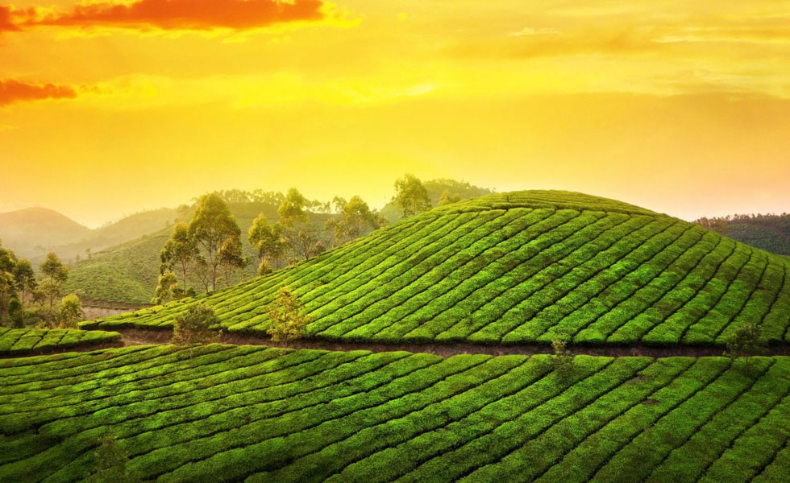
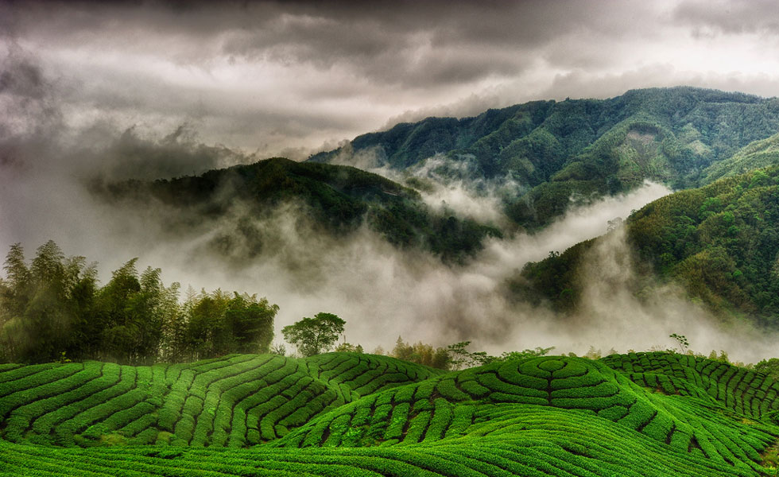

- 

- 
Сайт о самом популярном напитке в мире!
Несколько столетий назад человек сделал первый глоток заваренного чая. С тех пор он снискал славу одного из самых популярных и полезных напитков в мире и стал производиться во многих странах!
Этот сайт посвящён божественному напитку, который почти каждый из нас употребляет изо дня в день, даже не догадываясь, какие тайны хранит этот удивительный и полезнейший нектар чайных листьев.
Мы расскажем о разнообразии чая, способах заваривания. Вы узнаете удивительную историю чая.
Родиной чая считается Китай, где он имеет большое количество наименований в зависимости от сорта и района произрастания. Самое широко используемое наименование – «ча». «Ча» или по-другому «чха» означает «молодой листочек». Многие народы мира взяли наименование чая именно у китайцев, слегка исказив китайское название и интерпретировав его под свой национальный диалект. В нашу страну чай поступал чаще всего из Северного Китая, поэтому наше слово «чай» близко к северокитайскому произношению.
Несмотря на общую родину – Китай, почти в каждой стране существуют свои традиции чаепития. На нашем сайте вы узнаете о культуре чаепития в Японии и Китае, что поможет лучше менталитеты этих стран.
Мы будем рады, если вы поделитесь своими впечателниями о прочитанном. Отправить пожелания и замечания можно на странице контактов. Успехов и хорошего чаепития!